A style option string is often used to change the appearance of a plotted object, such as the color:
b: \(\Rightarrow\) Blue, r:\(\Rightarrow\) Red, k: \(\Rightarrow\) blacK
g: Green, m: Magenta, c: Cyan, y: Yellow
x = np.arange(11) # 0, 1, 2, ... 10y1 =10*x; y2 = x**2; y3 =2*x**2-10*xplt.figure(figsize=(6, 3)) # speficy figure sizeplt.plot(x, y1, 'b') # plot in Blue colorplt.plot(x, y2, 'r') # plot in Red colorplt.plot(x, y3, 'k') # plot in blacK colorplt.grid(True) # show a grid
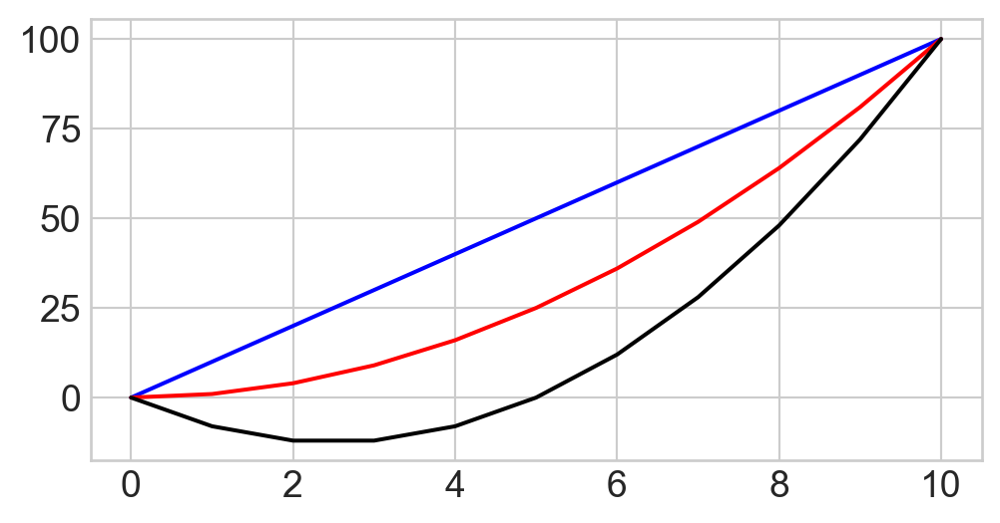
Style options: line style
We can also specify the line type with style options:
'b--'\(\Rightarrow\) Blue color, dashed line
'r-'\(\Rightarrow\) Red color, continuous line
'k-.'\(\Rightarrow\) blacK color, dashed-dotted line
plt.figure()plt.plot(x, y1, 'b--') # plot in Blue color, dashed lineplt.plot(x, y2, 'r-') # plot in Red color, continuoos lineplt.plot(x, y3, 'k-.') # plot in blacK color, dashed-dotted lineplt.grid(True) # show/hide grid
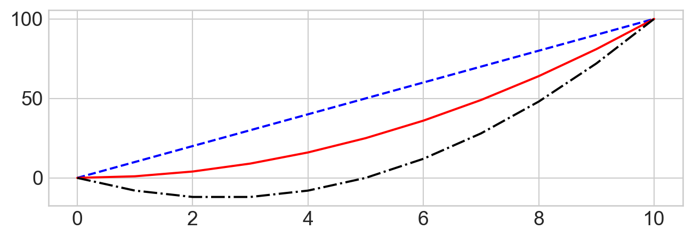
We combine line color and style in a style string option. Old convention taken from MATLAB.
Style options: marker
We can also specify the marker type:
'bo-'\(\Rightarrow\) Blue color, marker circle, continuous line
'rs--'\(\Rightarrow\) Red color, marker square, dashed line
'k^-.'\(\Rightarrow\) blacK color, marker triangle, dashed-dotted line
plt.figure()plt.plot(x, y1, 'bo-') # plot in Blue color, continuous line, with circles as markers.plt.plot(x, y2, 'rs--') # plot in Red color, dashed line, square as markers.plt.plot(x, y3, 'k^-.');# plot in blacK color, dashed-dotted line
Other style options
Certain style options can only be speficied as extra arguments. Here we change:
Line width
Marker size
…
plt.figure(figsize=(8, 3))plt.plot(x, y1, 'bo-', linewidth=4, markersize=10) # Blue color, continuous line, with circles as markers.plt.plot(x, y2, 'rs--', linewidth=4, markersize=10);# Red color, dashed line, square as markers.
plt.figure(figsize=(8, 3.0))# blue, continuous line, circles as markers, name y1.plt.plot(x, y1, 'bo-', label='y1') plt.plot(x, y2, 'rs--', label='y2')plt.xlabel('Time (s)') # label for the x axisplt.ylabel('Speed (m/s)') # label for the y axis plt.xlim([0, 10]) # range of the x axisplt.ylim([-20, 100]) # range of the y axisplt.legend() # show a legendplt.grid(True) # show a grid
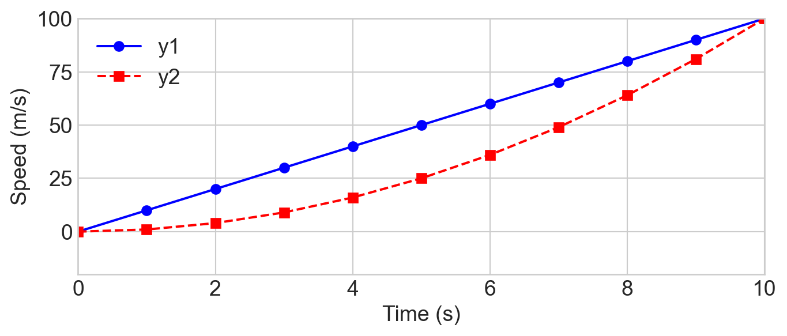
We can specify:
limits for the horizontal and vertical axes
labels for the horizontal and vertical axes
labels for the different plotted objects, to be shown in a legend
We can turn the gridline on and off
…
Subplots
Show several panels horizontally/vertically aligned. Example from the matplotlib galley:
# 2 panels aligned vertically, sharing the same y axisfig, ax = plt.subplots(2, sharey=True, figsize=(8, 3.5)) fig.suptitle("Damped and undamped oscillations")ax[0].plot(x, y1, 'ko-')ax[0].set_ylabel('Damped')ax[1].plot(x, y2, 'r.-')ax[1].set_ylabel('Undamped')ax[1].set_xlabel('Time (s)');
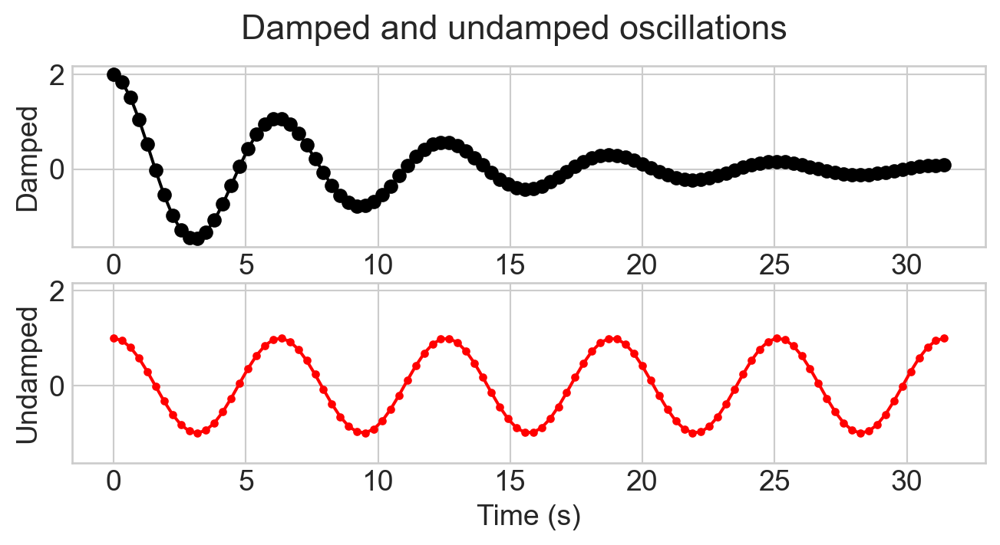
Note: the two plots have the same scale on the \(y\) axis (option sharey=True)
Subplots
An example with rows and columns of panels
n_row =2; n_col =3; x = np.linspace(0.0, 1.0)fig, ax = plt.subplots(n_row, n_col, sharex=True, sharey=True, figsize=(8, 5)) # 2x3 subplots with common x and y axisfig.suptitle("Several plots")for row_idx inrange(n_row):for col_idx inrange(n_col): ax[row_idx][col_idx].plot(x, (row_idx+1) * x**(col_idx+1) ) ax[row_idx][col_idx].set_title(f"Subplot {row_idx}, {col_idx}")
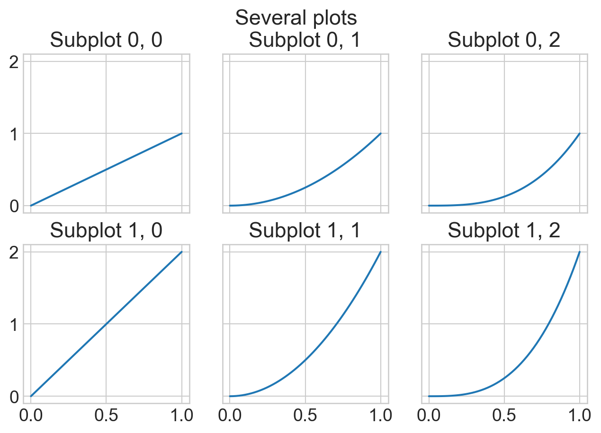
Save figure to file
x = np.linspace(0, 5, 100) # 100 points in [0, 5]y = np.exp(x)fig = plt.figure()plt.title("Exponential growth")plt.plot(x, y)plt.savefig("exponential.png")
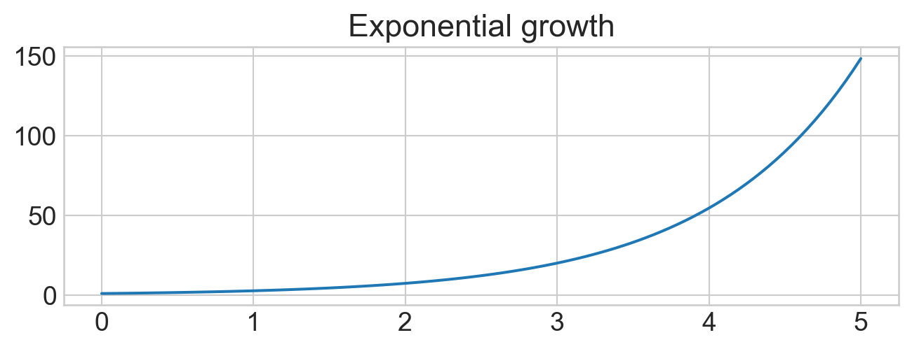
Matplotlib figures can be exported to common formats such as .png, .jpeg, .pdf, .svg.
Exercises (until Subplots included)
Commonly used plots
Line plot
Scatter plot
Bar plot
Histogram
Boxplot
Line plot
A line plot is used to represent a continuous function \(y = f(x)\). It uses interpolation to produce a continuous smooth curve.
x = np.linspace(0, 2*np.pi, 50)y = np.sin(x)plt.figure()plt.plot(x, y, 'o-')plt.title("y = sin(x)");
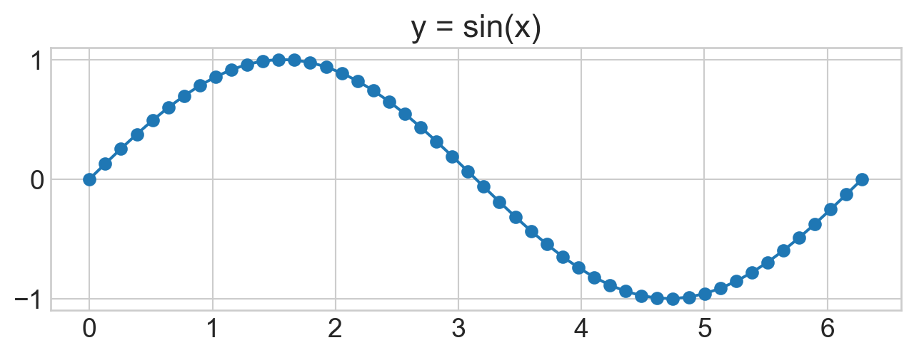
Scatter plot
A scatter plot is used to display data points in 2D. Like a lineplot, without interpolation.
x = np.linspace(0, 2*np.pi, 50)y = np.sin(x)plt.plot(x, y, 'o');# use circles as markers
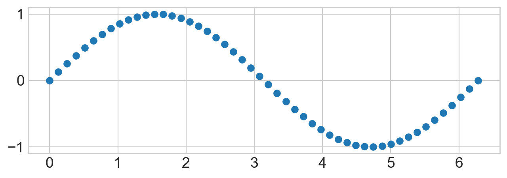
Can be implemented using the same plot function, using a marker style option such as 'o'.
Scatter plot cont’d
The specialized scatter functions allows setting data-dependent marker color & size.
n_points =20x = np.random.randn(n_points)y = np.random.randn(n_points)z = np.random.randn(n_points)w = np.random.rand(n_points)plt.figure(figsize=(8, 4))plt.scatter(x, y, c=z, s=w*2000, alpha=0.3, cmap='viridis')plt.colorbar();# show color scale
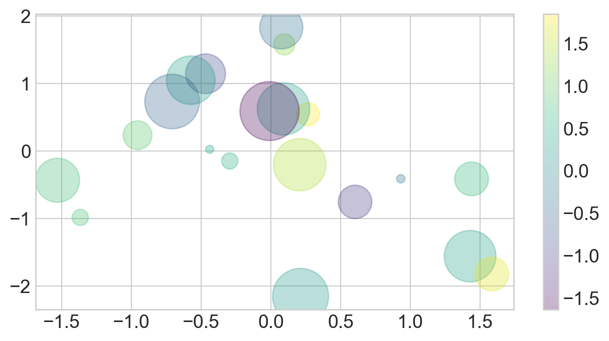
This enables exploration of 4 dimensions at once!
Bar plot
More intuitive than a scatter/line plot when the quantity on the \(x\) axis is categoric (i.e. not numeric)
The line plot is particularly misleading in this example: how to interpolate apples and oranges?
Histogram
A histogram visually describes the empirical distribution of one numerical variable.
The numerical range of a variable is divided into bins.
For each bin, the number of times the variable is within the bin range is counted
The bins may be either user-defined or automatically constructed
temperatures =20+2* np.random.randn(1000) # temperatures for different daysplt.figure()plt.hist(temperatures)plt.xlabel('Temperature $(^oC)$')plt.ylabel('Count (-)');
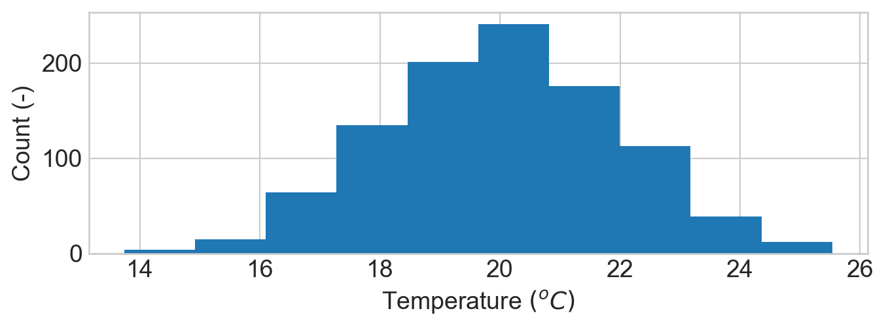
Histogram cont’d
A fancier example with multiple histograms and a legend
# fake temperature data for three monthstemp_april = np.random.normal(15, 0.5, 1000) # mean, std, n_samplestemp_may = np.random.normal(20, 1.5, 1000)temp_june = np.random.normal(25, 1, 1000)kwargs =dict(histtype='stepfilled', alpha=0.3, bins=40)plt.hist(temp_april, **kwargs, label='april')plt.hist(temp_may, **kwargs, label='may')plt.hist(temp_june, **kwargs, label='june')plt.xlabel('Temperature $(^oC)$')plt.ylabel('Count (-)');plt.legend();
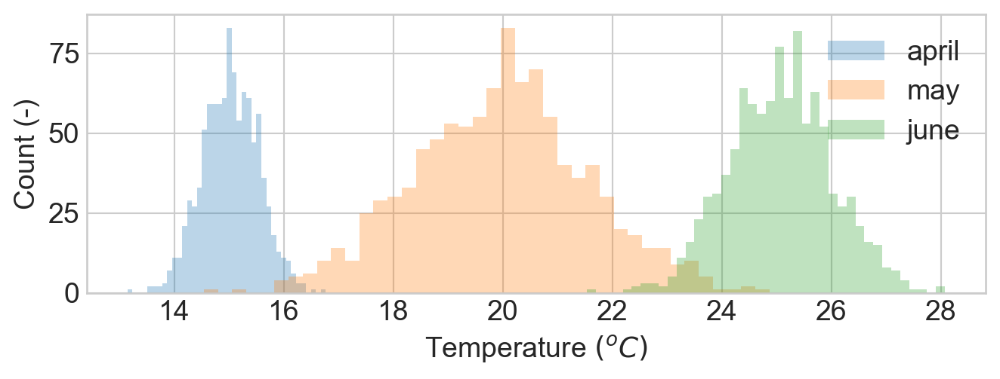
Overlap handled here with transparency (alpha channel option)
Histogram in 2D
Histograms may be extended to 2-dimensional point clouds. Use the hist2d function
mean = [0, 3]; cov = [[1, 1], [1, 2]]x, y = np.random.multivariate_normal(mean, cov, 100000).Tplt.hist2d(x, y, bins=100, cmap='Blues')plt.colorbar()plt.title("histogram")plt.xlabel("x")plt.ylabel("y");
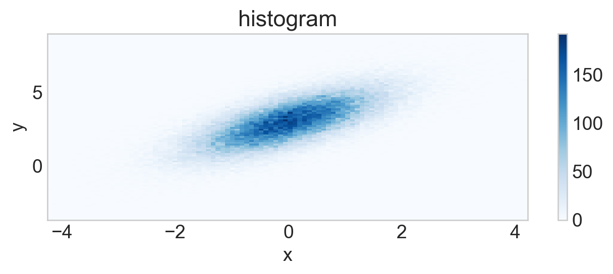
The histogram count is represented using a color map. Here, dark blue is high density.
Histogram in 2D cont’d
Histograms may be extended to 2-dimensional point clouds. Use the hist2d function
mean = [0, 3]; cov = [[1, 1], [1, 2]];x, y = np.random.multivariate_normal(mean, cov, 200000).Tfig, ax = plt.subplots(1, 2, figsize=(15, 3.5))fig.suptitle("2D histogram vs. scatterplot")ax[0].hist2d(x, y, bins=100, cmap='Blues')ax[0].set_title("2D histogram")ax[1].scatter(x, y)ax[1].set_title("scatterplot");
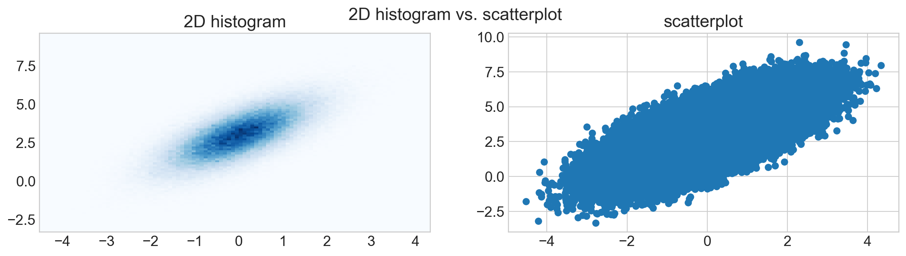
The 2D histogram (left) may be more informative than a 2D scatterplot (right).
Boxplot
A box plot summarizes the salient aspects of an empirical distribution.
data = np.random.randn(1000) # random data pointplt.boxplot(data);
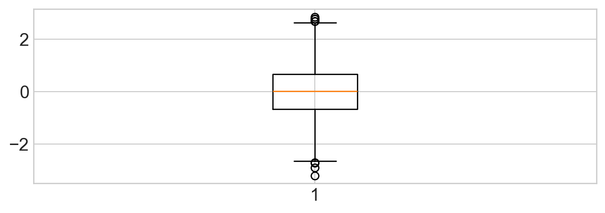
The orange line is the median of the distribution
50% of the points are inside the box
Most of the points are expected to be within the interval defined by the wiskers
Potential outliers are shown as circles
Boxplot cont’d
It is less informative than a histogram, but perhaps easier to read. Less is (sometimes) more!
data = np.random.randn(1000)fig, ax = plt.subplots(1, 2, figsize=(12, 4))ax[0].hist(data, orientation="horizontal")ax[0].set_title("Histogram")ax[1].boxplot(data)ax[1].set_title("Boxplot");
Typical visualization for datasets with a mix of continuous and categorical variables
Analyses on mixed continuous/categorical variables required in the project!
Choose a dataset that support such analyses!
Final Presentation:
How to find a dataset? Start thinking! Warning: plagiarism will not be tolerated !
Where to find a dataset?
Your hobbies and interests (games, sports, travels…)
Competitions often have (un)official datasets/APIs (e.g. Formula 1’s Fast-F1)
Data collected on your own, e.g. with your smartphone
See next slides…
Multi-Domain Portals & Aggregators
Kaggle Datasets: Thousands of community-contributed datasets across every domain. Most are tabular (CSV). https://www.kaggle.com/datasets
UCI Machine Learning Repository: Classic benchmark datasets for classification, regression, and clustering. Most datasets are tabular with accompanying documentation. https://archive.ics.uci.edu/datasets
Google Dataset Search: Meta-search engine indexing datasets from thousands of repositories worldwide. Useful for discovering niche or domain-specific data. https://datasetsearch.research.google.com/
Hugging Face Datasets: Large collection of NLP, vision, and audio datasets. Accessible via the datasets Python library. https://huggingface.co/datasets
EU Open Data Portal: Official open data portal of the European Union. Contains datasets from EU institutions on economy, environment, transport, agriculture, and public health. Many datasets are tabular (CSV/Excel).https://data.europa.eu/en
opendata.swiss: Official open data portal of the Swiss Confederation. Over 10000 datasets from federal, cantonal, and communal authorities covering transport, environment, health, economy, education, and public administration. Most data is tabular (CSV/JSON). https://opendata.swiss/en/
Data.gov (USA): U.S. government open data portal with over 250000 datasets covering health, education, climate, finance, agriculture, and more. https://data.gov/
Awesome Public Datasets (GitHub): A curated list of high-quality public datasets organised by topic. Useful starting point for discovering data across many domains. https://github.com/awesomedata/awesome-public-datasets
Swiss Datasets
Swiss Federal Statistical Office (BFS/OFS): Comprehensive statistics on the Swiss population, economy, education, health, environment, and society. https://www.bfs.admin.ch/bfs/en/home.html
MeteoSwiss Open Data: Historical and real-time meteorological data for Switzerland: temperature, precipitation, sunshine hours, wind, and more from over 260 stations. https://www.meteoswiss.admin.ch/services-and-publications/applications/ext/download-data-without-registration.html
SBB Open Data (Swiss Federal Railways): Real-time and historical data on Swiss public transport: train punctuality, passenger counts, station information, and timetables. https://opentransportdata.swiss/en/
Swiss National Forest Inventory (LFI): Data on Swiss forests: tree species, volumes, health, and biodiversity from periodic national surveys. https://www.lfi.ch/resultate/
Swiss Open Government Data – Canton of Zürich: Open data specifically from the Canton of Zürich: demographics, buildings, traffic, education, health statistics, and more. Tabular formats (CSV). https://www.zh.ch/de/politik-staat/opendata.html
FOEN – Swiss Federal Office for the Environment: Environmental monitoring data: air quality (NABEL network), water levels, noise pollution, waste statistics, biodiversity indicators for Switzerland. https://www.bafu.admin.ch/bafu/en/home/state/data.html
Swiss Personenverkehr (Public Transport Statistics): Detailed statistics on Swiss public transport usage, including modal split, passenger-kilometres, and regional comparisons. https://www.bfs.admin.ch/bfs/en/home/statistics/mobility-transport.html
Weather, Climate & Environment
NOAA Climate Data Online: Global historical weather data: daily/monthly summaries from weather stations worldwide, including temperature, precipitation, wind, and extreme events. https://www.ncei.noaa.gov/cdo-web/
NASA Earthdata: Satellite remote sensing data: land surface temperature, vegetation indices (NDVI), sea surface temperature, ice sheet observations, and atmospheric data. https://earthdata.nasa.gov/
Global Historical Climatology Network (GHCN): Daily and monthly climate summaries from over 100000 stations worldwide. One of the most widely used datasets in climate science. https://www.ncei.noaa.gov/products/land-based-station/global-historical-climatology-network-daily
Berkeley Earth Surface Temperature: Land and ocean temperature records with statistical analysis. Tabular data in text/CSV format with global coverage from the 1750s onward. https://berkeleyearth.org/data/
Global Biodiversity Information Facility (GBIF): Over 2 billion species occurrence records with geolocation data. Covers plants, animals, fungi, and microorganisms worldwide. https://www.gbif.org/
European Flood Awareness System (EFAS): Flood forecasting and historical discharge data for European river basins, provided through the Copernicus Emergency Management Service. https://www.efas.eu/
Finance & Economics
Yahoo Finance: Historical stock prices, volume, dividends, and splits for global equities, ETFs, indices, and currencies. Access via the Python yfinance library. https://pypi.org/project/yfinance/
FRED – Federal Reserve Economic Data: Over 800000 economic time series: GDP, unemployment, interest rates, inflation, housing, and monetary aggregates. https://fred.stlouisfed.org/
World Bank Open Data: Development indicators for all countries: GDP per capita, poverty rates, health expenditure, education, trade, and more. API and CSV/Excel download. https://data.worldbank.org/
IMF Data: International Monetary Fund datasets: World Economic Outlook, Balance of Payments, Government Finance Statistics, and exchange rates. https://data.imf.org/
Quandl / Nasdaq Data Link: Financial, economic, and alternative data. The free tier includes many datasets. https://data.nasdaq.com/
Swiss National Bank (SNB) Data Portal: Swiss monetary and financial statistics: interest rates, exchange rates, balance of payments, banking statistics, and securities data. https://data.snb.ch/en
Where to find a dataset?
Health & Medical
WHO Global Health Observatory: Global health statistics: life expectancy, disease burden, immunisation, maternal and child health, communicable diseases, and health systems across all countries. https://www.who.int/data/gho
PhysioNet: Repository of physiological signal datasets: ECG, EEG, blood pressure waveforms, sleep studies, and clinical databases. https://physionet.org/
Our World in Data – Health: Curated datasets on global health topics: COVID-19, vaccinations, disease burden, mental health, substance use, nutrition, and mortality. CSV/GitHub download. https://github.com/owid/owid-datasets
Global Burden of Disease (GBD): Comprehensive data on mortality, morbidity, and risk factors for 369 diseases across 204 countries from the Institute for Health Metrics and Evaluation. https://vizhub.healthdata.org/gbd-results/
Swiss Health Observatory (Obsan): Swiss health system data: health status, healthcare utilisation, costs, chronic diseases, and mental health indicators for Switzerland. https://www.obsan.admin.ch/en
Space & Astronomy
NASA Exoplanet Archive: Confirmed exoplanets and candidate detections with orbital parameters, stellar properties, and discovery methods. https://exoplanetarchive.ipac.caltech.edu/
ESA Gaia Archive: Positions, distances, and motions of nearly 2 billion stars in the Milky Way from ESA’s Gaia mission. https://gea.esac.esa.int/archive/
NASA Open Data Portal: Datasets from across NASA missions: planetary science, heliophysics, astrophysics, Earth science, and aeronautics. https://data.nasa.gov/
Minor Planet Center (MPC): Orbital elements, observations, and designations for all known asteroids and comets. https://www.minorplanetcenter.net/data
Open Exoplanet Catalogue: Community-maintained XML/CSV catalogue of all known exoplanets with detailed parameters. https://github.com/OpenExoplanetCatalogue/open_exoplanet_catalogue
Sports
FBref – Football (Soccer) Statistics: Comprehensive match and player statistics for major football leagues worldwide. Covers goals, assists, xG, passing, and defensive actions. https://fbref.com/
Statsbomb Open Data: Free event-level football data for select competitions (FA Women’s Super League, La Liga, FIFA World Cup, etc.). JSON format with detailed match events. https://github.com/statsbomb/open-data
Lahman Baseball Database: Complete batting, pitching, and fielding statistics for Major League Baseball from 1871 to present. CSV format. https://www.seanlahman.com/baseball-archive/statistics/
NBA Stats API: Official NBA statistics: player and team stats, play-by-play, shot charts, and advanced metrics. Accessible via the nba api Python package. https://github.com/swar/nba_api
Transfermarkt: Player market values, transfer histories, and performance data for football leagues worldwide. https://www.transfermarkt.com/
FIFA World Cup Data (Kaggle): Historical data on all FIFA World Cup matches from 1930 onward: scores, teams, venues, attendance, and referee information. https://www.kaggle.com/datasets/abecklas/fifa-world-cup
Swiss Football League Data: Match results, standings, and statistics for the Swiss Super League, available through the Swiss Football Association and football data aggregators. https://www.football.ch/SFL/en.aspx